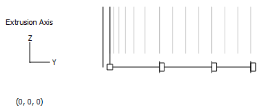

挤出视图中的操作
按下工具栏上的（）按钮即可显示“挤出”窗格的挤出视图。该视图用于确定挤出的范围以及在第三个（挤出）维度上的网格划分。基本操作包括定义挤出长度、沿长度添加点以将该长度分割为不同的边，然后指定各边的网格划分。该视图还用于指定模型在三维模型空间中的方向。请注意，一旦在构建视图中输入信息，系统就会默认创建并应用一个范围估计值（即挤出长度）。随着构建视图中的后续操作改变模型，该估计值会相应调整。因此，首次进入挤出视图时，挤出就已经有初始长度。

图 1：挤出视图显示挤出维度上的点和边
挤出视图呈现一个与构建视图所示平面垂直的视图平面。在此视图中，左侧的竖直线表示侧转后的构建视图。挤出的总长度从水平线左端的方形点起至该线右端的点止来描绘。其中还可能有表示挤出各阶段的中间点。
挤出视图中的操作在以下主题中介绍：
当在挤出视图中提供了必要的网格划分（zoning）信息后（并假定构建视图中的操作也已完成），模型即可进行挤出。更多信息请参见执行挤出（Performing the Extrusion）主题。
| 这些内容对您有帮助吗？… | FLAC3D © 2019, Itasca | 原文更新于 2020 年 10 月 8 日 |